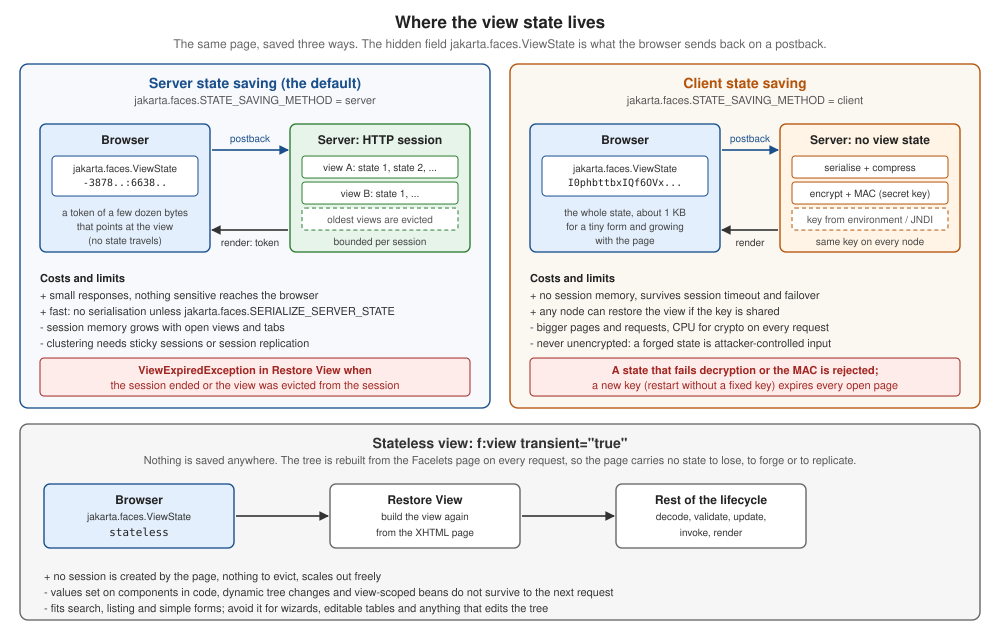

State Saving and Stateless Views
|
This content was generated with the assistance of AI and should be verified against the official documentation before being relied on in production. |
This page is written against Jakarta Faces 4.1 (API jakarta.faces-api 4.1.2, part of Jakarta EE 11), Eclipse Mojarra 4.1.17 and
Apache MyFaces Core 4.1.4, with Java 17 or later. Faces 4.0 behaves the same for everything below except where a section says
otherwise; the differences between releases are collected in What Changed per Version. Every behaviour, size and error message on this page
comes from a scratch Bookshelf WAR that was run on Apache Tomcat 11.0.26 with Weld 6.0.4.Final, once with Mojarra and once with
MyFaces, and driven with scripted HTTP requests (checked on 2026-10-08). Where the two implementations disagree,
Mojarra and MyFaces Compared lists the differences. Faces 5.0 is still a milestone release at the time of writing and nothing here
describes it as current behaviour.
HTTP forgets everything between two requests, but a Faces page is a tree of stateful components: an input remembers the value the user typed, a button knows which listeners are attached, a table knows which row is being edited. Faces solves the mismatch by saving a description of the tree at the end of one request and restoring it at the start of the next. That description is the view state. Where it is kept, how big it is, what it may contain and what happens when it is lost decide a large part of how an application behaves under load, in a cluster and under attack. This page explains all of it, and ends with the one kind of view that has no state at all.
What the View State Is
The specification divides the state of a view in two pieces: the tree structure, meaning the parent-child relationships of the components and their facets, and the component state, meaning the attributes and properties of every component and the validators, converters and listeners attached to it. Together they are enough to rebuild the page the user is looking at, so that the next request can run the lifecycle against it. Three consequences follow from the definition.
-
The view state is not the model. The values of a backing bean live in the bean and in the bean’s scope (see Scopes). A
@ViewScopedbean is kept in the session whichever way the view state is saved: in the runs below the component state travelled to the browser, and the bean still stayed in the session, so a state replayed in a new session got a new bean. -
It is not the page source either. The Facelets page is the recipe for the initial tree and is applied again on a postback; what the view state adds is whatever differs from it (Partial State Saving, and the Deprecated Full State Saving).
-
It is per view, not per user. One session holds many views: one for every page the user opened, every tab, every reload.
The hidden field jakarta.faces.ViewState is how the browser hands the state, or a reference to it, back to the server. The
specification fixes the name and strongly recommends that implementations make the value hard to predict. Each h:form renders one. This
is what the Bookshelf draft form produced with each way of saving the state (identifiers shortened where noted):
<!-- server state saving, the default: a reference of a few dozen bytes -->
<input type="hidden" name="jakarta.faces.ViewState" id="j_id1:jakarta.faces.ViewState:0"
value="-9216585846328768218:-353409625333825011" autocomplete="one-time-code" />
<!-- MyFaces: id="j_id__v_0:jakarta.faces.ViewState:1" value="ZmM4MDBjNTY4YTY2YjFlYjAwMDAwMDAx" -->
<!-- client state saving: the state itself, compressed and encrypted, 1088 characters for this tiny form -->
<input type="hidden" name="jakarta.faces.ViewState" id="j_id1:jakarta.faces.ViewState:0"
value="I0phbttbxIQf6OVxBoCVw5jkmXcznpY7QrYaqPpV7iOyDNbpplxvZAGw7LUqgoX6Eru2YfH54JCB+ArQ..." autocomplete="one-time-code" />
<!-- stateless view: the literal word, nothing is saved -->
<input type="hidden" name="jakarta.faces.ViewState" id="j_id1:jakarta.faces.ViewState:0"
value="stateless" autocomplete="one-time-code" />Source: Jakarta Faces 4.1 API: ResponseStateManager and Jakarta Faces 4.1 specification, 7.8.2 State Saving Alternatives and Implications
The figure below puts the three modes side by side: where the state lives, what the browser holds, what each costs and how each one fails.

A few details of the markup are worth knowing.
-
The
autocompleteattribute isone-time-codeon both implementations (the MyFaces configuration table notes that the default changed to it in 4.1.4). It tells the browser not to restore a stale state into the hidden field when the user returns with the back button, which several browsers ignore for the valueoff. Mojarra hascom.sun.faces.autoCompleteOffOnViewStateto renderoffinstead, MyFaces hasorg.apache.myfaces.AUTOCOMPLETE_OFF_VIEW_STATEwith the valuesone-time-code,trueandfalse. -
The
idof the field is made of the view root’s container client id, the separator, the name and a number that is unique in the view. Mojarra can omit theidaltogether withcom.sun.faces.enableViewStateIdRendering(defaulttrue). -
The hidden field comes at the end of the form on both implementations.
com.sun.faces.writeStateAtFormEnd(defaulttrue) andorg.apache.myfaces.RENDER_FORM_VIEW_STATE_AT_BEGIN(defaultfalse) move it to the beginning. -
MyFaces adds a second hidden field,
f_SUBMIT(the form id plus_SUBMIT), which it needs to recognise that the form was submitted; Mojarra adds a field named after the form id. A script that posts a form by hand has to send the one the implementation expects, plus the view state.
An Ajax request sends the field too, and the response brings the next value back as an ordinary update element, which
faces.js writes into the field of every form of the page:
<partial-response>
<changes>
<update id="f:out"><![CDATA[<span id="f:out">view=4 saves=1 title=abc</span>]]></update>
<update id="j_id1:jakarta.faces.ViewState:0"><![CDATA[-3878530320989289415:-5334554848323205659]]></update>
</changes>
</partial-response>Where State Saving Sits in the Lifecycle
State is restored in the first phase and saved in the last one; the four phases in between work on the restored tree. The tutorial states the same: on a postback the view is rebuilt and "the saved state is applied".
| Phase | What happens to the state |
|---|---|
Restore View |
|
Apply Request Values to Invoke Application |
The restored tree is live: converters, validators, listeners and the model update run against components whose attributes and local values are the ones the user saw. Components the actions add or remove are part of the state saved at the end. |
Render Response |
After the view is rendered the state is collected ( |
The classes that take part are layered so that each hides one decision from the layer above. The page author sees none of them.
| Class | Role |
|---|---|
|
The entry points. |
|
Saves and restores the view by visiting the tree. Mojarra and MyFaces ship a partial and a full variant (the API names
|
|
The abstraction of "where". |
|
The render kit’s part: writes the hidden field, reads it back, decides |
|
What a component implements to take part (State in Components, Including Your Own). Every |
Source: Jakarta Faces 4.1 specification, 2.5.3.2 State Management Considerations for the Faces Implementor and Jakarta Faces 4.1 API: StateManagementStrategy
The postback restore is the part most worth seeing once:
Source: Jakarta Faces 4.1 API: StateManagementStrategy and Jakarta Faces 4.1 API: ResponseStateManager
The Web Forms comparison of The Same Idea in ASP.NET Web Forms maps the same round trip onto ASP.NET, and the lifecycle page (Restore View) describes the phase itself.
Server State Saving
Server state saving keeps the state in the HTTP session and sends the browser only a token. The specification names the
jakarta.faces.STATE_SAVING_METHOD context parameter, with the values server and client (case is ignored), and says that
server is the default when it is not set; the tutorial says the same in its instructions for choosing where state is saved. Both
implementations behaved like that. (The Javadoc of StateManager.STATE_SAVING_METHOD_PARAM_NAME says the default is client,
which contradicts the specification text and what both implementations do; trust the specification.)
<context-param>
<param-name>jakarta.faces.STATE_SAVING_METHOD</param-name>
<param-value>server</param-value>
</context-param>
<!-- Mojarra: 15 logical views x 15 states each (the defaults), written out -->
<context-param>
<param-name>com.sun.faces.numberOfLogicalViews</param-name>
<param-value>15</param-value>
</context-param>
<context-param>
<param-name>com.sun.faces.numberOfViewsInSession</param-name>
<param-value>15</param-value>
</context-param>
<!-- MyFaces: the latest 20 views (the default), and 4 sequential ones -->
<context-param>
<param-name>org.apache.myfaces.NUMBER_OF_VIEWS_IN_SESSION</param-name>
<param-value>20</param-value>
</context-param>
<context-param>
<param-name>org.apache.myfaces.NUMBER_OF_SEQUENTIAL_VIEWS_IN_SESSION</param-name>
<param-value>4</param-value>
</context-param>Source: Jakarta Faces 4.1 specification, 7.8.2 State Saving Alternatives and Implications, Jakarta EE Tutorial: To Specify Where State Is Saved, Eclipse Mojarra 4.1: context parameters and Apache MyFaces Core 4.1: configuration tables
How it works, as observed:
-
The first render saves, the postback looks up. The state of a view is stored in the session under a token, and the token is the value of the hidden field. The token is not the state: on Mojarra it is two numbers joined by a colon (the first identifies the logical view, that is, the initially requested page and all its postbacks, and stays constant across them; the second identifies the saved state and changes with every request), on MyFaces it is a Base64 text made of a random part and a counter. The format is an implementation detail; do not parse it.
-
The token only works in the session that issued it. A postback that carried the token but not the session cookie, and a postback from another session, both failed in Restore View with a
ViewExpiredExceptionon both implementations. The session is therefore part of the security of server state saving: with Mojarra’scom.sun.faces.generateUniqueServerStateIds(defaulttrue) the token is a random number instead of a counter, so an attacker who can make a browser submit a chosen token cannot name a particular stored view, and the value no longer reveals how many views the session has built. -
The state is an object graph, not bytes, unless asked. By default the saved state stays in the session as a Java object graph and is not serialised until the container serialises the session (to disk, or for replication).
jakarta.faces.SERIALIZE_SERVER_STATE=true(Faces 2.2) serialises it at once, which costs a serialisation and a deserialisation per request and buys only one thing: aNotSerializableExceptionshows up in the request that causes it (What Must Be Serialisable).com.sun.faces.compressViewStatethen compresses what goes into the session on Mojarra, andorg.apache.myfaces.COMPRESS_STATE_IN_SESSIONdoes it on MyFaces. -
Old states stay usable for a while. Posting from an old page works as long as its state is inside the window of the limits below, which is what keeps the back button usable.
The Limits of the Session
The session would grow without bound if every view stayed. Both implementations keep a bounded number and evict the oldest. The specification names none of the settings; they belong to the implementations, and this is the same table that the scopes page uses for the view scope, because evicted state and view-scoped beans are tied.
| What it limits | Mojarra 4.1.17 | MyFaces 4.1.4 |
|---|---|---|
Logical views kept in the session (one per initially requested page, whatever the number of its postbacks) |
|
no such concept |
States kept for each logical view (the back-button window of one page) |
|
|
Sequential postbacks of one page that are kept before older ones are dropped |
covered by the setting above |
|
The behaviour was checked on both implementations. A page was loaded and then posted back repeatedly, each postback made from the page the previous one returned, which produces a chain of states; then the form was submitted again from one of the older states (a fresh session and a fresh chain for each probe, so that a probe does not evict the next one).
| Setting | Mojarra 4.1.17 | MyFaces 4.1.4 |
|---|---|---|
Limit of 2 ( |
the first three states expired ( |
the same |
Defaults, chain of 21 states (20 postbacks) |
states 0 to 5 expired, states 6 to 20 (the latest 15) were processed |
states 0 to 16 expired, states 17 to 20 (the latest 4) were processed, although |
MyFaces with |
not applicable |
every state was processed |
So the back-button window of a single page is 15 states on Mojarra and, by default, 4 on MyFaces: the sequential limit of MyFaces
applies to consecutive postbacks, the view limit to distinct views. A user who clicks Save five times and then goes back five
pages with the browser’s back button meets the exception on MyFaces with its defaults. What exhausts the limits in practice, however,
is not postbacks but new views: every GET, every reload, every tab and every crawler request creates a view. The experiment of the
scopes page showed it: with numberOfLogicalViews and numberOfViewsInSession set to 2, four GET requests made the postbacks
of the first two pages fail. The limits are per session, not per browser window, so a user who opens many tabs of the catalogue can
expire the form in the first tab, which the multi-window page explains from the window side. When the application
needs several tabs, raise the limits (the cost is memory) or use a way of saving state that does not occupy the session.
Mojarra keeps view-scoped beans under a separate limit (com.sun.faces.numberOfActiveViewMaps), so on Mojarra the beans of an
evicted state may outlive it; MyFaces destroys them together with the state. The details are in the scopes page.
Client State Saving
Client state saving writes the whole state into the page and keeps nothing on the server. Setting it is one parameter:
<context-param>
<param-name>jakarta.faces.STATE_SAVING_METHOD</param-name>
<param-value>client</param-value>
</context-param>Source: Jakarta Faces 4.1 specification, 7.8.2 State Saving Alternatives and Implications and Jakarta EE Tutorial: To Specify Where State Is Saved
The specification requires the state written to the client to be encrypted in a tamper-evident way, and the Javadoc of
ResponseStateManager.writeState repeats the requirement for client state saving. Both implementations do
it by default. The pipeline, read from the sources and confirmed by switching compression and encryption off one at a time, is: serialise the
state with Java serialisation, compress it, encrypt it with AES, authenticate it with an HMAC (SHA-256 on both) and encode it
as Base64.
| Configuration | Mojarra 4.1.17 | MyFaces 4.1.4 |
|---|---|---|
Server state saving: the token |
39 |
32 |
Client state, partial state saving, defaults (encrypted; Mojarra compresses by default, MyFaces does not) |
1088 |
704 |
Client state with compression switched on (MyFaces) or off (Mojarra): |
2008 |
600 |
Client state with encryption switched off (never in production, see below) |
1012 |
656 |
Client state with full state saving (Partial State Saving, and the Deprecated Full State Saving) |
3564 |
11520 |
The figures are single readings and vary by a few characters from request to request, because the identifiers inside the state change. The numbers grow with the tree: a page with a large table or a long form carries tens of kilobytes in every response and in every request. The state travels in the body of the request for postbacks, which is fine, but a state that large costs a client with a slow uplink on every click, and the CPU of compressing and encrypting it falls on the server instead of the memory of the session.
What client state saving does, as observed on both implementations:
-
It does not need the session. A postback with the state and without the session cookie was processed. Closing the session, timing out or failing over to another node does not expire the page (the view-scoped bean is new, because beans stay in the session).
-
It survives a restart only when the key is fixed. A state saved before a restart was rejected afterwards when no key was configured and accepted when one was (Keys: Where They Come From and Where They Must Not).
-
It is not bound to the session or the user. A valid state taken from one session was accepted in another. The value is self-contained; the unpredictability that server state saving gets from the token is absent, so do not use the field as a request-forgery token (the security page covers protection against forged requests).
-
A modified or invented state is rejected, but not always with the same exception (next table).
| Posted state | Mojarra 4.1.17 | MyFaces 4.1.4 |
|---|---|---|
a valid state with one character changed in the middle |
|
|
a short invented value ( |
|
|
an invented value with server state saving ( |
|
|
The Javadoc of ResponseStateManager.getState says that a state which fails to decrypt or shows evidence of tampering must raise
a ProtectedViewException; neither implementation does. A single error page for ViewExpiredException covers the tampered case
on both, and a second one for the generic FacesException, or a filter in front of the servlet, covers the rest.
The age of a client state can be limited: com.sun.faces.clientStateTimeout on Mojarra and
org.apache.myfaces.CLIENT_VIEW_STATE_TIMEOUT on MyFaces, both in minutes and active only when set. With the value 1, a state
that was 70 seconds old was still accepted, and one that was 130 seconds old was rejected with a ViewExpiredException on both
implementations, so treat the value as a minimum lifetime, good to within about a minute, not as a precise timer.
Mojarra’s source counts whole minutes and compares with a strict greater-than, which is why the first minute after the nominal timeout
still passes.
Keys: Where They Come From and Where They Must Not
Encryption and authentication need keys, and the keys decide the operational behaviour of client state saving.
| Aspect | Mojarra 4.1.17 | MyFaces 4.1.4 |
|---|---|---|
Source of the key |
the JNDI environment entry |
the context parameters |
If none is configured |
a random key per application start; only a |
a random key per application start ( |
Key sizes accepted in the runs |
16 and 32 bytes |
16 and 32 bytes |
Algorithms |
AES in CBC mode with PKCS5 padding and a random IV per state, HmacSHA256 over IV and ciphertext, as the source of the guard shows |
|
Switching encryption off |
|
|
Source: Eclipse Mojarra 4.1: context parameters, Mojarra 4.1 source: ByteArrayGuard and Apache MyFaces Core 4.1: configuration tables
Four rules follow, and each is the opposite of something that is easy to do.
-
A key is configuration, never source. No key appears in
web.xml, infaces-config.xmlor in a class. Read it from the environment of the process or from a secret store, at deployment time. The example below does it for Tomcat. -
Every node of a cluster and every restart must use the same key, or the state of a page saved by one node cannot be restored by another, and every open page expires at every deployment. Without a configured key that is exactly what happens: in the runs, a state saved before a restart failed after it with a
ViewExpiredExceptionon both implementations, and worked after it when a key was configured. -
On Mojarra, a session key can win over the configured key. When a session exists, Mojarra’s
ByteArrayGuardreads the key from the session attributecom.sun.faces.SKand stores its configured key there if the attribute is empty. With a replicated session, node B therefore decrypts the state saved by node A with the key of node A, whatever B was configured with: wrong keys on a cluster are masked for existing sessions and surface only for new or cookie-less requests. MyFaces has no such mechanism. The run that showed it is in the deployment and clustering page; do not rely on it, configure the same key everywhere. -
Changing the key expires every open page. Rotate keys deliberately, at a quiet moment, and keep the old key out of the configuration afterwards; there is no key ring.
-
Do not switch encryption off to look at the state. The unencrypted state is a Java serialisation stream and the server deserialises what it receives. On both implementations the setting drops the authentication code together with the encryption (the state in the runs began with the gzip or serialisation header and carried no code in front of it), so the server would deserialise bytes chosen by the client, a well-known way to attack Java applications. For debugging, use the development stage and the server-side logging instead.
Tomcat can substitute environment variables into the files it parses when it is told to, which is enough to keep a key out of the web application:
<?xml version="1.0" encoding="UTF-8"?>
<Context>
<!-- Read from the process environment when Tomcat parses this file; the file holds a placeholder only. -->
<Environment name="faces/ClientSideSecretKey" type="java.lang.String"
value="${FACES_CLIENT_SECRET}" override="false"/>
</Context><?xml version="1.0" encoding="UTF-8"?>
<Context>
<Parameter name="org.apache.myfaces.SECRET" value="${MYFACES_SECRET}" override="false"/>
<Parameter name="org.apache.myfaces.MAC_SECRET" value="${MYFACES_MAC_SECRET}" override="false"/>
</Context># Generate once, store in the secret manager of the platform, never in the repository.
openssl rand -base64 32 # one value per variable
export FACES_CLIENT_SECRET="$(read-from-your-secret-store faces-client-secret)" # placeholder command
export JAVA_OPTS="-Dorg.apache.tomcat.util.digester.PROPERTY_SOURCE=org.apache.tomcat.util.digester.EnvironmentPropertySource"
"$CATALINA_HOME/bin/catalina.sh" runBoth examples were run with the embedded Tomcat of the scratch application: a state saved before a restart was accepted after it with the key in the environment (16 and 32 byte keys), and rejected with another key. Two failure modes are worth knowing.
-
Without the property source, Tomcat does not substitute the variable and the literal text
${FACES_CLIENT_SECRET}becomes the key. Mojarra loggedSEVERE: Unexpected exception initializing encryption. No encryption will be performed.and then failed to render every page with aNullPointerException; MyFaces failed with an HTTP 500 too. Neither wrote an unprotected state, so the failure is loud, which is what you want. -
Application servers have their own way of exposing environment variables or secrets to a JNDI entry or a context parameter (expression resolution in the server’s descriptors, vault integrations, container secrets). Use that mechanism and run the same restart test: save a page, restart, post it.
The name of the Mojarra JNDI entry changed in Faces 4.0. Mojarra 2.2.20 and 3.0.0 read java:comp/env/jsf/ClientSideSecretKey, and the
4.0 and 4.1 releases read java:comp/env/faces/ClientSideSecretKey. An application that moves from 3.0 to 4.x with the old entry in
its server configuration silently falls back to a random key per start: it still works until the first restart or the second node.
When the Mojarra runtime has no java.naming module, as in a minimised runtime image, Mojarra does not set up the encryption at
all (its documentation says that encryption is only set up when JNDI entries can be processed); include the module and test.
Checking What Your Application Really Sends
The first bytes of the decoded value tell whether a state is protected. The gzip header (Base64 H4sI) or the Java serialisation
header (Base64 rO0AB) at the start of the field means the state is readable, compressed or not and unencrypted. Encrypted values look like random text. Run it against a
test deployment of every application before release:
#!/bin/bash
# usage: audit-viewstate.sh https://test.example.org/bookshelf/catalogue.xhtml
url="$1"
state="$(curl -s "$url" | grep -o 'name="jakarta.faces.ViewState"[^>]*value="[^"]*"' | sed 's/.*value="//; s/"$//')"
if [ -z "$state" ]; then
echo "no jakarta.faces.ViewState field found"; exit 2
fi
case "$state" in
stateless) echo "stateless view: nothing to protect" ;;
H4sI*|rO0AB*) echo "FAIL: client state is not encrypted (readable serialisation)"; exit 1 ;;
*)
echo "state length: ${#state} characters"
if [ "${#state}" -lt 100 ]; then echo "looks like a server state token"; else echo "opaque: encrypted client state"; fi ;;
esacA Mojarra state with disableClientStateEncryption set began with H4sIAAAAAAAA and decoded to a gzip stream whose payload started
with the serialisation magic aced0005; the MyFaces state with USE_ENCRYPTION=false began with rO0AB.
What is encrypted is still sent to the user’s browser. Everything the components hold is inside the field, so the same rule as for every client-side store applies: never put a secret, a credential or a personal record in an attribute or property of a component just because the browser cannot read the encrypted value, and prefer the server state if the page holds sensitive data.
Choosing Between Server and Client State
Neither is better. They move the cost: from the session to the network and the CPU, and from the server’s memory to the user’s browser.
| Aspect | Server state saving | Client state saving |
|---|---|---|
Memory of the server |
grows with the open views and tabs of every session, bounded by the limits of The Limits of the Session |
none for the state; view-scoped beans still live in the session |
Size of responses and requests |
a token of a few dozen bytes |
the whole state, from about a kilobyte for a tiny form to tens of kilobytes for a large page, in every response and every postback |
CPU |
none by default; serialisation only when asked |
serialise, compress, encrypt and authenticate on every request, and the reverse on every postback |
Session timeout or eviction |
the page expires ( |
the page keeps working, subject to the optional state timeout |
Cluster |
sticky sessions or session replication; the state must be |
any node can restore the page if every node has the same key |
Restart or redeploy |
sessions are usually lost, so are the pages |
pages survive only with a fixed key |
Back button and old tabs |
only the states inside the window of the limits |
every old page still works until the state timeout |
Security |
the session is the boundary; the token is random and tied to the session |
the state is attacker-controlled input protected only by the key, and replayable; never unencrypted |
What operations must provide |
session sizing, replication if clustered |
keys in a secret store, the same in every node, a rotation procedure |
A practical order of preference:
-
Keep server state saving, the default, and size the limits for how users work, until a measurement shows a problem.
-
When the problem is a page that expires because the user leaves it open longer than the session lives, ask first whether the page should be a stateless view (Stateless Views), whether the session timeout is right, and whether the form should save a draft.
-
Choose client state saving when the state is small, the nodes of the cluster do not share sessions, or session memory is the bottleneck, and only with fixed keys, compression and a restart test in the deployment pipeline.
-
A page that does not need the tree to persist at all does not need either: a stateless view has nothing to size, expire or secure.
Partial State Saving, and the Deprecated Full State Saving
Before Faces 2.0 every request saved all of the tree: the structure and the state of every component, including everything
the page author wrote as attributes. Partial state saving, introduced in 2.0 and the behaviour since, rebuilds the tree from
the Facelets page at the start of every postback and saves only the delta: what each component changed after the view was built. Faces
calls the moment after the first build the initial state (UIComponent.markInitialState, initialStateMarked and
clearInitialState of PartialStateHolder); anything set on a component later, by an action, a listener or a
programmatic change, is part of the delta, and anything the tag handlers set while building the view is not.
The effect is large, and the size table of Client State Saving shows it: the same form needed 1088 characters with partial state saving on Mojarra and 3564 with full state saving, and 704 against 11520 on MyFaces.
Two consequences matter for the page author.
-
The view is rebuilt on every postback, so what decides the tree must be the same on the postback. Tags that decide at build time (
c:if,c:forEach,ui:includewith an expression forsrc) are evaluated again, against the model as it is now; if the answer changed, the tree differs from the one the state was saved for. The page on build time and render time (the postback bug) shows the symptoms. Mojarra offerscom.sun.faces.restoreBuildTimeDecisions(4.0.23, defaultfalse), which saves the result of each decision and replays it, andcom.sun.faces.refreshTransientBuildOnPSS(4.0.19, defaultfalse), which reapplies the page before rendering; MyFaces offersorg.apache.myfaces.REFRESH_TRANSIENT_BUILD_ON_PSS(defaultauto) andorg.apache.myfaces.REFRESH_TRANSIENT_BUILD_ON_PSS_PRESERVE_STATE. Each costs more work per postback and papers over a design that should use render-time tags (rendered,ui:repeat) instead. -
Programmatic changes are saved if they go through the component API. Setting an attribute or property in an action, adding a child in a listener or switching
renderedoff are all part of the delta (State in Components, Including Your Own).
Full state saving is the older algorithm. It stays available through two settings, jakarta.faces.PARTIAL_STATE_SAVING=false for
the whole application and jakarta.faces.FULL_STATE_SAVING_VIEW_IDS for a comma separated list of view ids. Faces 4.1
deprecates both, and the StateManager constants (PARTIAL_STATE_SAVING_PARAM_NAME, FULL_STATE_SAVING_VIEW_IDS_PARAM_NAME)
are marked deprecated for removal since 4.1, with the stated reason that full state saving is to be dropped in favour of partial state saving, to keep the specification simple. The two implementations warn at startup:
WARNING: The configuration 'jakarta.faces.PARTIAL_STATE_SAVING' is deprecated as of Faces 4.1 and should not longer be used.That is Mojarra’s wording, typo included; MyFaces prints the same message up to Faces 4.1. Use full state saving only for a
legacy component that cannot be made to cooperate with partial state saving, set it for the single view that needs it, plan its
removal and note that when the application does not declare the parameter, the specification asks the runtime to derive the
mode from the version of the application: applications declared as version 1.2 or lower must not use partial state saving.
A scripted check of the ids: with Mojarra, jakarta.faces.FULL_STATE_SAVING_VIEW_IDS set to /draft.xhtml saved that view in full
(a 3564-character client state against 1088) and the form worked on postback. With MyFaces 4.1.4 the same value, /draft.xhtml, enlarged
the state (9708 characters against 704) but the postback of the listed view then failed in Restore View with
IllegalStateException: Error restoring component: j_id__v_0, and the value without the slash was ignored. Treat the per-view setting of MyFaces
as unreliable in 4.1.4 and test it before relying on it. jakarta.faces.PARTIAL_STATE_SAVING=false worked on both.
<!-- Deprecated since 4.1: back to the pre-2.0 algorithm for the whole application -->
<context-param>
<param-name>jakarta.faces.PARTIAL_STATE_SAVING</param-name>
<param-value>false</param-value>
</context-param>
<!-- Deprecated since 4.1: only these views are saved in full (MyFaces 4.1.4: test before use) -->
<context-param>
<param-name>jakarta.faces.FULL_STATE_SAVING_VIEW_IDS</param-name>
<param-value>/legacy/report.xhtml,/legacy/export.xhtml</param-value>
</context-param>Source: Jakarta Faces 4.1 API: StateManager and Jakarta Faces 4.1 specification, B.1 Changes between 4.1 and 4.0
Two cheap settings reduce the cost of every state save. com.sun.faces.disableIdUniquenessCheck (default false) skips the walk
that verifies that every component id is unique inside its naming container; true drops one full tree walk per state save in
every project stage, auto drops it only in Production. MyFaces has org.apache.myfaces.CHECK_ID_PRODUCTION_MODE (default
auto). Leave them at their defaults during development, because a duplicate id is a bug you want to see.
State in Components, Including Your Own
Everything above is automatic for the standard components. A custom component takes part by keeping its state where the
framework can see it. The specification asks a component that extends UIComponent directly to implement PartialStateHolder
(or StateHolder); the helper StateHelper does it for you, and UIComponentBase returns one from getStateHelper(). The
custom components page of this section (its state section) describes the four ways to hold a
value. The component below uses the two that matter most for state saving, and the table after it shows what each state saving
mode does to them.
package org.example.bookshelf.component;
import jakarta.faces.component.FacesComponent;
import jakarta.faces.component.UIOutput;
import jakarta.faces.context.FacesContext;
import jakarta.faces.context.ResponseWriter;
import java.io.IOException;
@FacesComponent(value = "bookshelf.ShelfFlag", createTag = true,
namespace = "urn:bookshelf:state", tagName = "flag")
public class ShelfFlag extends UIOutput {
enum PropertyKeys { highlight }
private String scratch = "none"; // a plain field: not part of the state
@Override
public String getFamily() {
return "bookshelf.state";
}
public boolean isHighlight() {
return (Boolean) getStateHelper().eval(PropertyKeys.highlight, false); // saved with the view
}
public void setHighlight(boolean highlight) {
getStateHelper().put(PropertyKeys.highlight, highlight);
}
public String getScratch() {
return scratch;
}
public void setScratch(String scratch) {
this.scratch = scratch;
}
@Override
public void encodeEnd(FacesContext context) throws IOException {
ResponseWriter out = context.getResponseWriter();
out.startElement("span", this);
out.writeAttribute("id", getClientId(context), null);
out.writeAttribute("class", isHighlight() ? "flag flag-on" : "flag", null);
out.writeText(getValue() + " [highlight=" + isHighlight() + ", scratch=" + scratch + "]", null);
out.endElement("span");
}
}<!DOCTYPE html>
<html xmlns="http://www.w3.org/1999/xhtml"
xmlns:h="jakarta.faces.html"
xmlns:f="jakarta.faces.core"
xmlns:s="urn:bookshelf:state">
<f:view transient="false">
<h:head><title>Flag</title></h:head>
<h:body>
<h:form id="f">
<s:flag id="flag" value="Dune"/>
<h:commandButton id="set" value="Set" action="#{requestDraft.flag}"/>
<h:commandButton id="other" value="Other" action="#{requestDraft.save}"/>
</h:form>
</h:body>
</f:view>
</html>// in the backing bean: change the component in one request ...
public void flag() {
FacesContext context = FacesContext.getCurrentInstance();
ShelfFlag flag = (ShelfFlag) context.getViewRoot().findComponent("f:flag");
flag.setHighlight(true); // StateHelper
flag.setScratch("set in a previous request"); // plain field
}
// ... and look at it in the next one (any other button of the form)Source: Jakarta Faces 4.1 specification, 2.5.3.1 State Management Considerations for the Custom Component Author and Jakarta Faces 4.1 API: StateHelper
| Mode | After Set (same response) | After the next postback |
|---|---|---|
Server state, partial state saving |
|
|
Client state, partial state saving |
the same |
the same: |
Full state saving |
the same |
the same: |
Stateless view |
|
|
The property survives because the StateHelper records the change as part of the delta. The plain field resets on every request
because the component is created again from the page on every postback. If a component must save an extra field by hand, it
overrides saveState and restoreState and calls the superclass first, which the specification stresses is essential,
and saveState must not change the state. State that must never be saved, because it is rebuilt on every request, goes in the
TransientStateHelper (getTransientStateHelper().putTransient). Components in a stateless view lose the first kind too, which
is why the specification warns that a component that needs state to operate correctly must not be used in a stateless view.
What Must Be Serialisable
The specification states the rule for the state of the whole view, whichever way it is saved: the values of all component attributes
and properties, and the saved state of attached objects, must implement Serializable such that writing the aggregate state to an
ObjectOutputStream does not throw a NotSerializableException. For attached objects (converters, validators, listeners,
behaviours) it distinguishes three kinds:
-
an object that implements
StateHoldersaves itself; -
an object that is
Serializableis saved with Java serialisation; -
an object that is neither must have a public no-argument constructor and is restored only to its initial default state.
Whether the rule is enforced when the state is saved depends on the mode, and the failure usually shows up late. The check below put an object into the view root’s attributes, which are part of the view state, with an action:
public void poison() { // not Serializable and without a public no-argument constructor
FacesContext.getCurrentInstance().getViewRoot().getAttributes().put("junk", new Handle("cover-service"));
}
public void poison2() { // declared Serializable, but holds a field that is not
FacesContext.getCurrentInstance().getViewRoot().getAttributes().put("junk", new Leaky());
}
public static class Handle {
private final String name;
public Handle(String name) { this.name = name; }
}
public static class Leaky implements Serializable {
private final Object connection = new Object();
}Source: Jakarta Faces 4.1 specification, 7.8.2 State Saving Alternatives and Implications and Jakarta Faces 4.1 API: StateManager.SERIALIZE_SERVER_STATE_PARAM_NAME
| Mode | Handle (not serialisable, no default constructor) |
Leaky (serialisable class, non-serialisable field) |
|---|---|---|
Server state, not serialised (the default) |
the request succeeded; the next postback failed in Restore View, because the restore tried to recreate the object. Mojarra: |
worked, in the same JVM; it would fail when the session is serialised for replication or passivation |
|
the same failure on the next postback |
Mojarra: the request that caused it failed in Render Response with |
Client state |
the same failure on the next postback |
both implementations: the request that caused it failed in Render Response with |
The lesson is the one the specification gives in 7.8.2: serialisation is optional for server state, and an application that
works with the default may break in a cluster. Run the development and test environments with jakarta.faces.SERIALIZE_SERVER_STATE=true
(and Mojarra’s com.sun.faces.enableClientStateDebugging=true, which deserialises a client state right after writing it) so that the mistake fails in the request that
makes it; never run production with the debugging parameter. The usual causes are UIComponent or FacesContext references, entity managers, streams
and other infrastructure objects stored in component attributes; keep identifiers, and look infrastructure up when it is needed.
Stateless Views
Some pages have no use for a persistent tree: a search box, a listing that is rebuilt from its parameters on every request, a
login form. A stateless view tells Faces not to save any state for it. Faces 2.2 added it, through the transient attribute of f:view, and the
specification describes it as a view whose component state is not saved, to be used with full awareness of the statefulness requirements of its components.
<!DOCTYPE html>
<html xmlns="http://www.w3.org/1999/xhtml"
xmlns:h="jakarta.faces.html"
xmlns:f="jakarta.faces.core"
xmlns:ui="jakarta.faces.facelets">
<f:view transient="true">
<h:head>
<title>Quick search</title>
</h:head>
<h:body>
<h:form id="search">
<h:inputText id="query" value="#{quickSearch.query}" required="true"/>
<h:commandButton id="go" value="Search" action="#{quickSearch.search}"/>
<h:messages id="messages"/>
</h:form>
<ul>
<ui:repeat value="#{quickSearch.results}" var="title">
<li>#{title}</li>
</ui:repeat>
</ul>
</h:body>
</f:view>
</html>package org.example.bookshelf.web;
import jakarta.enterprise.context.RequestScoped;
import jakarta.inject.Named;
import java.util.List;
import java.util.Locale;
@Named("quickSearch")
@RequestScoped
public class QuickSearch {
private static final List<String> TITLES =
List.of("Dune", "Dune Messiah", "Emma", "Neuromancer", "Persuasion");
private String query = "";
private List<String> results = List.of();
public String getQuery() {
return query;
}
public void setQuery(String query) {
this.query = query;
}
public List<String> getResults() {
return results;
}
public void search() {
String needle = query.strip().toLowerCase(Locale.ROOT);
results = TITLES.stream()
.filter(title -> title.toLowerCase(Locale.ROOT).contains(needle))
.toList();
}
}The attribute is a jakarta.el.ValueExpression that must evaluate to a Boolean; if it is true the implementation calls
setTransient(true) on the UIViewRoot, and "this view must not participate in state saving or restoring". The attribute is
evaluated when the view is built, on every request including the postback, and the postback of an h:form is sent to the view’s
URL without its query string (a page requested with ?x=1&y=2 rendered action="/bookshelf/quick-search.xhtml" on both implementations), so an expression that depends on a request parameter would
give another answer on the postback. Use a constant or something the postback repeats.
What the runs showed, on both implementations:
-
The field says
stateless. The view state is the literal word, in the page and in the Ajax response’supdateelement.ResponseStateManager.isStatelessis how Restore View recognises it, andUIViewRoot.isTransient()reads the flag in code. -
No session is needed. A
GETof the page created no session (Mojarra set no cookie at all; MyFaces set only its flash token cookie,oam.Flash.RENDERMAP.TOKEN). A postback from a client that had no cookie was processed: the search fordunereturnedDuneandDune Messiah. The view is a rebuild from the page, so there is nothing for the session to hold. -
Conversion, validation and messages work, because they belong to the lifecycle, not to the saved state: the empty required field produced
Validation Error: Value is required., and Ajax requests withf:ajaxworked too. -
A
POSTwithoutjakarta.faces.ViewStateis an initial request. The action did not run and the page was rendered fresh. A hand-written form that posts to a stateless view has to include the field, with the valuestateless. -
Components that an action changed are rebuilt from the page on the next request. The ShelfFlag of State in Components, Including Your Own, and a
styleattribute that an action set on an output text, showed the change in the response of the action and had lost it on the next request, on both implementations. A change must be made again in every request, or the view must be stateful. -
@ViewScopedbeans do not work usefully. The specification does not require them to work in a stateless view; each request created a new instance. The scopes page (Stateless Views) shows the difference between the two implementations. A request-scoped bean, or a session-scoped bean for what must survive, is the match. -
Nothing guards the form against forgery. There is no per-view token, so any client that can reach the URL can post to a stateless view with the literal value. State-changing actions need the container’s or the application’s own protection (the security page), which is one more reason to keep stateless views to reads and low-risk forms.
| Good fit | Poor fit |
|---|---|
Search, filters and listings that read their parameters from the request or from the query string |
Wizards, editable tables, any page whose tree is changed by actions or listeners |
Login and contact forms with request scoped beans |
Pages that use |
Public pages that must scale without sessions |
Forms with Ajax interactions that depend on what the component held in the previous request |
A form rendered in a cluster whose nodes do not share sessions |
Pages that rely on |
ViewExpiredException
The exception means that the state the postback refers to is not available. It is thrown in Restore View, before any of the application’s code runs, so it cannot be caught by a bean; it reaches the container as an exception.
| Cause | Notes |
|---|---|
The session ended (timeout, logout, |
Server state saving only. A very common cause: a user leaves a form open longer than the session timeout. |
The state was evicted |
Server state saving only. Too many views or tabs for the limits of The Limits of the Session; or too many postbacks and a back button. |
The server restarted or the application was redeployed |
Server state: sessions lost. Client state: the key changed, unless it is fixed (Keys: Where They Come From and Where They Must Not). |
A cluster node without the session or without the key received the postback |
Missing sticky session or replication; different keys. |
The state was modified, truncated or invented |
Client state; also for an unknown token with server state saving. |
The client state timeout has passed |
Only when |
What the user sees is the default error page of the server unless the application handles the exception. The simplest handler is an error page in
web.xml that tells the user what happened and offers the way forward:
<error-page>
<exception-type>jakarta.faces.application.ViewExpiredException</exception-type>
<location>/expired.xhtml</location>
</error-page><!DOCTYPE html>
<html xmlns="http://www.w3.org/1999/xhtml" xmlns:h="jakarta.faces.html">
<h:head><title>Page expired</title></h:head>
<h:body>
<h1>Your page expired</h1>
<p>For your security the page was closed while you were away. Reload the catalogue and try again.</p>
<h:link outcome="catalogue" value="Back to the catalogue"/>
</h:body>
</html>Source: Jakarta Faces 4.1 API: ViewExpiredException and Jakarta EE Tutorial: Using Ajax with Jakarta Faces Technology
In the runs the page was served with the status 500 on both implementations, and the handler worked on Mojarra in every project stage. MyFaces
used the error page in the Production stage and its own detailed error page in Development, so an application that tests the handler only in development
on MyFaces does not see it. An Ajax request does not reach the error page at all: the response is an ordinary HTTP 200 whose
body is a partial-response with an error element, class jakarta.faces.application.ViewExpiredException on Mojarra and
jakarta.faces.application.ViewExpiredException on MyFaces, which is why a client script has to look for the name with includes, not equality
(Ajax Error Handling). The exception handling page covers
ExceptionHandler and the OmniFaces FullAjaxExceptionHandler, which turn an expired view into a navigation, including for Ajax.
Handling the exception is not the same as preventing it. The measures, cheapest first: make the page a stateless view if it can be; size the session limits for the number of tabs; set the session timeout to the real idle time of the users; save a draft of long forms on the server; use client state saving with fixed keys when sessions are the problem. A bean cannot hide an expired view, and neither should it, because the state it refers to is gone: the user must reload.
Reading and Observing the State Mode in Code
The 4.1 API for state is small; most of what the old StateManager offered was removed in 4.0 (What Changed per Version).
| API | Use |
|---|---|
|
true when the application saves state in the client. |
|
the view state as a string, without markup (this saves the view; calling it costs a state save) |
|
whether the view is stateless; what |
|
the name of the hidden field, |
|
used by the lifecycle; |
|
a strong token for protected views and the like |
|
extension points of an implementation or a library (not for applications) |
|
what components and attached objects implement (State in Components, Including Your Own) |
The implementations add service providers for the serialisation: Mojarra reads com.sun.faces.serializationProvider, a class name of a
com.sun.faces.spi.SerializationProvider, which is called on every state save and restore; MyFaces reads
org.apache.myfaces.SERIAL_FACTORY, a factory for serialising the view state. Both are for special needs (a faster serialiser, a
class loader trick); the default is correct for applications.
A diagnostic bean for the development stage is enough to see the mode of a deployment. It reads the state mode and shows whether the current view is transient:
package org.example.bookshelf.web;
import jakarta.enterprise.context.RequestScoped;
import jakarta.faces.context.FacesContext;
import jakarta.inject.Named;
@Named("stateInfo")
@RequestScoped
public class StateInfo {
public boolean isClient() {
FacesContext context = FacesContext.getCurrentInstance();
return context.getApplication().getStateManager().isSavingStateInClient(context);
}
public boolean isViewTransient() {
return FacesContext.getCurrentInstance().getViewRoot().isTransient();
}
}<h:outputText value="state saved in the #{stateInfo.client ? 'client' : 'server'}, transient view: #{stateInfo.viewTransient}"/>What State Saving Costs, and How to Measure It
The cost of state saving is a function of the number of components, so everything that shrinks the tree shrinks the cost: fewer components
per page, ui:repeat or a data table over a page of rows instead of the whole list, and rendered on regions that are not needed. The performance
page collects the measures; the ones specific to state saving are these.
-
Measure the field. With client state saving, the length of
jakarta.faces.ViewStateis the number of characters that every response and every postback of the page carries. The script below prints it for any page. -
Know what the state contains. Large values kept in component attributes or properties, and tables whose rows keep their own component state, each cost bytes (the
rowStatePreservedattribute makes a table or repeat save the whole state of the components of every row, which its Javadoc says adds overhead). -
Compress client state. Mojarra does by default, MyFaces needs
org.apache.myfaces.COMPRESS_STATE_IN_CLIENT=true; in the runs it reduced the 704-character field to 600. -
Keep the session lean for server state. One state per postback and per view; raise the limits only as far as users need.
-
Tune the serialiser last. The serialisation providers of Reading and Observing the State Mode in Code are only worth touching when a measurement says that serialisation is the cost.
#!/bin/bash
# usage: state-size.sh https://test.example.org/bookshelf/catalogue.xhtml
curl -s "$1" \
| grep -o 'name="jakarta.faces.ViewState"[^>]*value="[^"]*"' \
| sed 's/.*value="//; s/"$//' \
| awk '{ print length($0) " characters" }'State Saving in a Cluster
The deployment and clustering page covers the topic as a whole. From the state saving point of view the options are four, and each has a precondition that is easy to forget.
| Option | Requires | Failure if it is missing |
|---|---|---|
Server state with sticky sessions |
a load balancer that routes a session to one node |
a postback reaches a node without the state: |
Server state with session replication |
every component attribute and property |
|
Client state |
the same fixed keys on every node (Keys: Where They Come From and Where They Must Not) |
|
Stateless views |
request scoped beans, no reliance on state |
none for state; the application must not need it |
The specification also tells implementers that want saved state to fail over to another container instance to keep that in mind in their server side strategy, and notes that serialising the view into the session lets the usual session failover mechanisms of the container do the work.
The Same Idea in ASP.NET Web Forms
ASP.NET Web Forms solved the same problem with the same trick, a hidden field that round-trips the state of the control tree, and the two descriptions complement each other. The Web Forms side is written up in ViewState and Control State, its place in the page life cycle in Page Life Cycle and Postback, the session-based alternative in State Management and Caching and the key material in Security.
| Idea | Jakarta Faces | ASP.NET Web Forms |
|---|---|---|
The hidden field |
|
|
Where the state lives by default |
on the server, in the session; the field holds a token. Client state saving is a switch. |
in the page: the field holds the state. A session based persister ( |
What is saved |
the delta of the components against the view built from the page (partial state saving); the tree is rebuilt from the page |
the changed properties of the controls whose state tracking is on, matched by control id and position; control state is saved separately |
Opting out |
|
|
Integrity and confidentiality |
only for client state: AES with an HMAC, keys from JNDI (Mojarra) or context parameters (MyFaces) |
a MAC ( |
Tying the state to the user |
the token of server state is random and works only in the session that created it |
|
A farm of servers |
sticky sessions or replication for server state; the same keys everywhere for client state |
the same |
When the state is not there |
|
a state that fails verification is rejected before it is deserialised (the Web Forms page explains how) |
Measuring the cost |
the length of the field; the browser’s network tools |
the length of |
Source: Understanding ASP.NET View State, PageStatePersister Class and SessionPageStatePersister Class
Three differences are worth keeping in mind when moving between the two. First, the default is opposite: Faces keeps the state on
the server and Web Forms sends it to the browser, so the first problem of a Faces application is a page that expires, and the first
problem of a Web Forms page is its weight. Second, Faces has a limit on how many views a session keeps and Web Forms has none, because
the browser is the store. Third, in Faces client state saving moves the exact Web Forms risks to the application: the keys (machineKey there, the JNDI
entry or the context parameters here) must be the same on every node, secret and kept out of source control, and a state that cannot be
verified must be rejected. The stateless view has no Web Forms equivalent as a single switch; the nearest thing is ViewStateMode="Disabled"
on a page, with the difference that a Faces stateless view rebuilds the tree on every request by design.
Mojarra and MyFaces Compared
Everything in this table was observed in the same application on Tomcat 11.0.26 and Weld 6.0.4.
| Aspect | Mojarra 4.1.17 | MyFaces 4.1.4 |
|---|---|---|
Default state saving method |
server |
server |
Server state token |
two numbers joined by a colon, the first stable across the postbacks of one page |
Base64 of a random part and a counter |
Limits on the session |
|
|
A chain of 20 postbacks of one page, then re-posting from each state |
states 6 to 20 (15 states) were processed, older ones expired |
states 17 to 20 (4 states) were processed, older ones expired |
|
the request fails in Render Response with |
the response is rendered, |
Client state key |
JNDI |
context parameters |
Client state without a configured key |
random key per start; restart expires all pages |
random key per start; restart expires all pages |
Client state compression |
on by default ( |
off by default ( |
Encryption algorithm |
AES/CBC/PKCS5Padding with a random IV, HmacSHA256 (source) |
|
Tampered client state |
|
|
Garbage ( |
|
|
Malformed token with server state ( |
|
|
|
|
|
|
used in |
used in |
Stateless view and the session |
no cookie set by the |
only the |
Per-view full state saving ( |
worked |
|
Source: Eclipse Mojarra 4.1: context parameters, Mojarra 4.1 source: ByteArrayGuard and Apache MyFaces Core 4.1: configuration tables
The two bundled implementations are not interchangeable for state saving settings: every context parameter above that starts
with com.sun.faces or org.apache.myfaces is ignored by the other implementation. An application that is meant to run on
both (the servers page lists what each server bundles) sets both families, and runs the restart and
re-post tests on each.
What Changed per Version
| Version | Change |
|---|---|
1.x |
Server and client state saving, selected by |
2.0 |
Partial state saving becomes the default; |
2.2 |
Stateless views: the |
3.0 |
The package rename to |
4.0 |
The deprecated |
4.1 |
Full state saving is deprecated for removal: |
5.0 (upcoming) |
Faces 5.0 is a milestone release; this page does not describe it. The deprecation of full state saving suggests the settings above will go; check the release notes before relying on them. |
Source: Jakarta Faces 4.1 specification, B.1 Changes between 4.1 and 4.0, B.2 Changes between 4.0 and 3.0 and the Javadoc "Since" tags of StateManager and ResponseStateManager
Where the Books Are Outdated
-
The
StateManagerAPI. Burns and Schalk describe how to write a customStateManagerfor JSF 1.0 and 1.1 withsaveSerializedView,getTreeStructureToSave,getComponentStateToSaveand aSerializedView, and the older books showgetTreeStructureToRestoreandgetComponentStateToRestoreof theResponseStateManager. These methods are deprecated since the 2.x line and removed in Faces 4.0 (checked against the 3.0.0 and 4.0.1 API jars). The view is saved and restored byStateManagementStrategy, andStateManager.getViewStateandResponseStateManager.getStateremain. -
An unencrypted client state shown as normal. The same book shows a client state field named
com.sun.faces.VIEWwhose value starts withH4sI, which is the Base64 of a gzip stream: readable, unauthenticated state. The field is calledjakarta.faces.ViewState, the defaults of both implementations encrypt and authenticate it, and the audit of Checking What Your Application Really Sends treats a value that starts withH4sIas a failure. -
Everything is saved. The older books explain that the whole component tree is serialised into the session or the page. Since Faces 2.0 the tree is rebuilt from the Facelets page and only the delta is saved, which changes both the size of the state and the rules for components that change after build time (Partial State Saving, and the Deprecated Full State Saving). Full state saving is the way they describe it and is now a deprecated setting.
-
Client state saving as a casual switch. Mann, Dudney and others, and Jacobi and Fallows show
javax.faces.STATE_SAVING_METHODwith the valueclientorserverand move on. The name isjakarta.faces.STATE_SAVING_METHODsince 3.0, and none of them mentions the Mojarra key setting, the need for fixed keys in a deployment, or the rule that client state without encryption and a MAC must never be sent to a browser (Keys: Where They Come From and Where They Must Not). Mann’s advice to make sure that an application works with both settings, because the person who configures production may change the parameter, still holds, and the restart and re-post tests of this page are how to follow it. -
State saving advice that belongs to JSP views. Mann recommends developing with client state so that a changed JSP page cannot clash with a view restored from the session, and Jacobi and Fallows explain that the
f:viewend tag callswriteState. JSP is gone (removed in 4.0); Facelets rebuilds the view from the page at every postback, and the state is written by the view declaration language. -
Component state by hand. Mann and Jacobi and Fallows show
saveStateandrestoreStatereturning anObjectarray, which is valid and is still required for fields that are not in theStateHelper. Faces 2.0 added theStateHelper, which current components use, and the rules for attached objects (StateHolder,Serializableor a public no-argument constructor) matter more now that partial state saving restores components from the page (State in Components, Including Your Own). -
Seam-era workarounds. Leonard’s cookbook switches to client state saving to make a Seam conversation propagate. Seam 2 is no longer maintained; use CDI scopes and the standard conversation and flow scopes.
-
No stateless views. None of the books covers
f:view transient="true", which arrived in Faces 2.2. -
Session memory as free. The books treat server state as unbounded. Both implementations limit the number of views and states kept per session (The Limits of the Session), and MyFaces keeps only four sequential states by default.
Common Mistakes
-
Client state saving without a fixed key. It works until the first restart or the second node, and then every open page expires. Set the key from the environment and test a restart.
-
Client state saving without encryption and a MAC.
disableClientStateEncryption=trueorUSE_ENCRYPTION=falseleft on from a debugging session sends a Java serialisation stream that the server will deserialise. Audit the field (Checking What Your Application Really Sends). -
A key in
web.xml,faces-config.xml, a class or the repository. Read it from the environment or a secret store; rotate it when it leaks. -
Treating the view state as a CSRF token. With client state it is replayable and not bound to the session; with a stateless view it is a constant. Protect state-changing requests separately.
-
Putting secrets or personal data into component attributes with client state. The browser holds the state. It is encrypted, but it is not yours.
-
Assuming server state is unlimited. Many tabs, many reloads and crawlers fill the limits; the form in the first tab expires. Size the limits and prefer stateless views for read-only pages.
-
Expecting the back button to work after many postbacks on MyFaces. The default keeps four states of a chain of postbacks.
-
Storing non-serialisable objects in component attributes. Works in a single JVM and fails at replication time, or on the next postback. Test with
jakarta.faces.SERIALIZE_SERVER_STATE=true. -
Using
@ViewScopedbeans in a stateless view. A new instance per request. -
Changing a component in an action of a stateless view. The change is gone on the next request.
-
Relying on the
f:view transientexpression to read a request parameter. The postback does not repeat the query string. -
Turning on full state saving to fix a rebuild bug. It hides the symptom, costs three to sixteen times the state in the runs and is deprecated for removal. Use render-time tags.
-
No handler for
ViewExpiredException. The user sees a server error page. Add the error page, and handle the Ajax case in the client. -
Testing the error page on MyFaces in
Developmentonly. MyFaces shows its own page there; test inProduction. -
Upgrading Mojarra from 3.0 to 4.x with the key under
jsf/. The new name isfaces/; the old entry is ignored and the key is random again.
References
-
Jakarta Faces 4.1 specification, 2.5.3.2 State Management Considerations for the Faces Implementor
-
Jakarta Faces 4.1 specification, 7.8.2 State Saving Alternatives and Implications
-
Jakarta Faces 4.1 specification, B.1 Changes between 4.1 and 4.0
-
Jakarta Faces 4.1 specification, B.2 Changes between 4.0 and 3.0
-
Jakarta EE Tutorial: Using Ajax with Jakarta Faces Technology